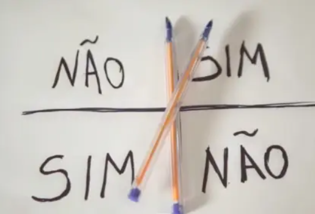

Existem muitas maneiras de conversar com fantasmas!!!!!! Existem métodos mais simples, mas nem todos são 100% precisos!!!! É preciso escolher bem o método!!!!!!!!
Um dos métodos mais fáceis, que até uma criança pode fazer, é o desafio do Charlie Charlie!!!! Você precisa de dois lápis e uma folha de papel. Na folha você vai escrever sim e não, aí você coloca os lápis um em cima do outro formado um +, desse jeito!!!!
Aí você pergunta, "Charlie Charlie você está aí?" e o lápis vai se mexer e você vai ter sua resposta!!!!! Aí é só fazer mais perguntas!!!!!!!!!!!
Você pode usar métodos mais avançados como um medidor PEM ou até psicografia!!!! Mas meu favorito é o tabuleiro ouija!!!!!!!
Lembrem-se também de sempre serem respeitosos!!!! Os fantasmas são pessoas também!!!!!!!